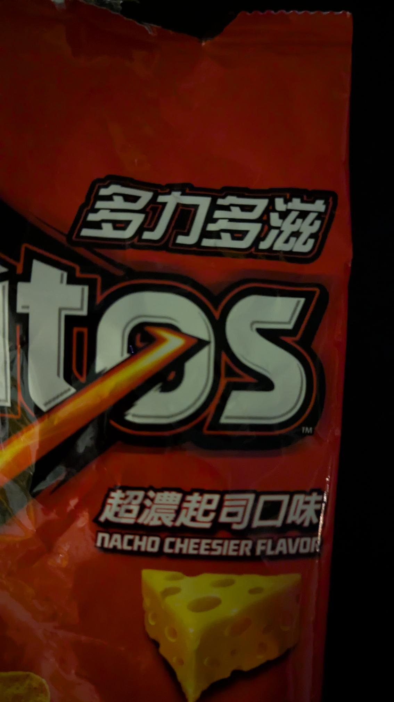

Ope...A Life
4
#pnw
Yesterday morning we woke up early (or, more correctly, I woke up early and Stacy woke up at her regular time), grabbed some donuts from Depoe Baykery (love the name!), and we went to Depoe Bay to look for some whales.
It should be noted that prime whale watching time is mid-December to mid-January and April through May so we were a little late to the party and looked for whales on their way to Baja who were similarly delayed (though probably not because they'd picked up pastries at the best bakery in the area).
No luck. Though we did see the Coast Guard hanging around, running some practice sessions towing a boat through the narrow passage to the bay.

It's cool watching them practice this. The channel they have to navigate is shallow and narrow. Oftentimes they need to line everything up then wait for the correct set of waves to get through safely. Check out this video of what it looks like from the boat being towed.
It's also neat to note the number of birds chilling on the water. The video at the top of this page doesn't have the greatest resolution, but you can still see a small number of the many birds that were out there in the lower right-hand corner of the video. They're just bobbing along, riding the swells, waiting for breakfast to swim on by.
#books
Finished Husbands by Holly Gramazio.
Small, tight chapters. Interesting premise. Enjoyed the writing.
Finished A Death in Door County by Annelise Ryan.
Wanted to enjoy this book so much. Lake Michigan. Wisconsin. Neat premise. The writing didn't do it for me and after the first one hundred pages I was skimming just to get the gist of the story. The characters left me wanting and the writing, did I mention the writing? I did not click with the writing. And I still want to try the second book in the series because of the premise. Crap.
#library
My mellow is harshed. So crabby this morning. I'm nearly never crabby at work.
I heard coworkers gossiping about other coworkers. Had yesterday off and found I blanked on a patron appointment. The first patron this morning wanted help without me helping them. The second patron I worked with smelled so badly I got a headache. The third, fourth, and fifth patrons were a group who wanted to share every last bit of their genealogy research ad nauseam (which genealogists so frequently do). The sixth patron walked up and down the aisles, loudly belching and farting their way through the library. The seventh patron is one who has been asking the same questions for years, I answer, they're happy, then two or three days later they ask again. The eigth patron finished using the computer, yelled, "Fucking idiots!" farted loudly, then left the building.
It's not often I'm screaming "go away! go away! go away!" inside my head while trying to smile and help a patron. The first hour that's all I was doing.
And I didn't wake up this way. I was in a great mood. Nice little workout. Nice little breakfast. Nice little talk with Stacy. It was wonderful.
Now? Just sitting here at my desk. Hour two underway. The smells have mostly dissipated. The initial flurry of patron interactions have slowed. The crabbiness slowly leeches away. The mellow returns.
#library
The hardest part of working in a public library? The smells.
I once wrote something on Facebook, something like, "the delight of getting your sense of smell back after days of being sick; the distress of it happening at the public library."
Library staff and MLIS profs favorited that saying like nothing I'd done before or since.
Old books smell. I realize there are many people who love the smell of old books. Old books simply smell unpleasantly musty and moldy to me.
Patrons smell. Acceptable personal hygiene seems to be a spectrum. A very large, very stinky spectrum.
#pnw

We've had four straight weeks of sun on the coast. Tomorrow the clouds and rain return.
#library
Two potentially stress inducing occurrences at work this morning. Opened the door. Boom! There they were. Sneaky little buggers. Hadn't even opened yet. But I'm feeling fine. Easy breezy. The library mellow has returned.
#library
Went to a copyright conference in Portland yesterday. PSU. Kinda cool being in a bigger city again. Lots of life. Chaos. Totes fun. The conference was very informative and well done. The presenters were interesting and fun. Stacy came along and worked in the library. We walked around campus. Ate street food. Got lost. Good times.

#www
Comet Atlas Caught in the Act of Disintegration
The nucleus of Comet ATLAS (C/2024 G3) held together during a brutal perihelion but not for long. Lionel Majzik of Hungary was the first to report and record dramatic changes in the comet between January 18th and 19th. The bright, strongly condensed head rapidly became more diffuse, a sure sign that its nucleus was disintegrating based on past observations of crumbling comets. His superb sequence, photographed remotely from Chile, clearly reveal the dramatic transformation, which was later confirmed by Australian observers.
Wikenigma - an Encyclopedia of Unknowns
Wikenigma is a unique wiki-based resource specifically dedicated to documenting fundamental gaps in human knowledge. Listing scientific and academic questions to which no-one, anywhere, has yet been able to provide a definitive answer. [ 1152 so far ] That's to say, a compendium of so-called 'Known Unknowns'. All articles are open for registered users to contribute and edit.
Tamara Thomsen was 24 feet underwater when she spotted it: the decaying end of a dugout canoe, a great white oak carved some 1,200 years ago. It was jutting out of a sandy ridge in Wisconsin’s Lake Mendota—a body of water skirting Madison, the state capital—and she knew it was a remarkable find. “What I did not understand was the breadth of the discovery.”
My best shot at a stock photo for the #Fediverse, showing its most popular projects.
How Does a Caterpillar Turn into a Butterfly?
To become a butterfly, a caterpillar first digests itself. But certain groups of cells survive, turning the soup into eyes, wings, antennae and other adult structures.
Why Americans Don’t Walk: A Forgotten Centennial
One hundred years ago, everyone walked in Los Angeles. Some people drove too, but the rules favored the walkers. A dense and extensive network of street railways made walking practical for most people. It was not the product of car culture, which was a nascent force. The public did not ask for it, and no referendum was held about it. Rather, it was the pet project of LA’s most successful car salesman: Paul G. Hoffman, the owner of America’s biggest Studebaker dealership. He hired a graduate student, Miller McClintock, to write it. And we don’t have to guess about Hoffman’s intentions, because he stated them himself. He commissioned the ordinance to sell more cars.
#books
DNF'd The Perfect Son by Freida McFadden.
Interesting concept (figured that out when I gave up at page 68 then read the last dozen pages). Did not enjoy reading about high school kids' crushes and friendships.
#ope
Two things I don't understand peoples' admiration of and fascination with: Axolotls and Trump.
#ope
Had "monthly" meeting with staff the walking dead today. Ugh. Monthly is in quotes because we usually end up managing one every couple of months.
Which, believe me, is A-OKAY.
And staff the walking dead?
I think hell was full so they got sent to staff the book mines.
That's being a bit dramatic, of course.
A bit.
Some of the staff are hoopy froods who really know where their towel is.
I've worked in places where I've loved every one of my coworkers and they loved me. What a joyful thing it was to get to go to work. I've worked in horribly demoralizing, degrading places that'd swallow your soul. Where I'm at now? Somewhere in between.
Staff the walking dead used to argue about who had to lock up every night. It was painful to watch. Hurt my heart to see them argue. Told 'em I'd lock up. Did it for years. Stopped doing it last year. They argue again now. My heart doesn't hurt anymore.
Only sixteen years until retirement.
#ope
We euthanized Snowflake one year ago.
Because we did the right thing, and because she was such an amazing part of our lives, and because she was family (not the kind of family where we're fur parents and she's our fur baby... that's not my bag), and because we're trying to celebrate all that, I'm calling today Kill Kitty Day.
#pnw
Bought some, what, foreign Doritos? Slightly out-of-market Doritos? Gray market Doritos? Un-American Doritos?

Living life on the edge, n'est-ce pas!
Here's what Google Lens had to say about the translation to English:

The top characters translate to "Doritos."
The bottom characters translate to "Super strong cheese flavor."
caveat lector